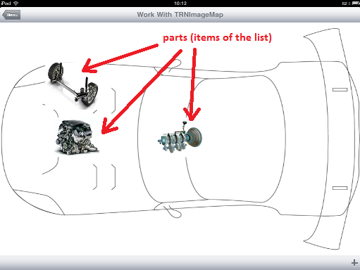
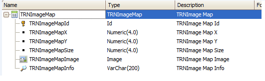
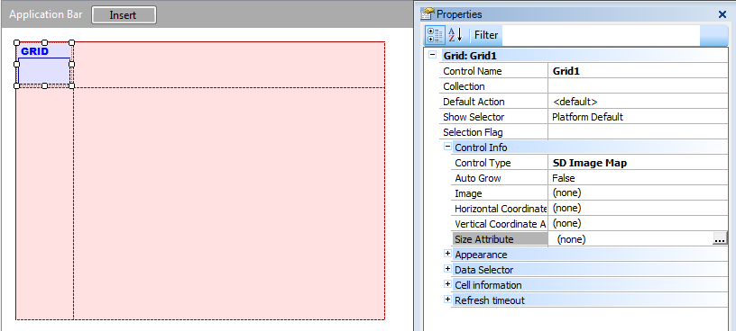
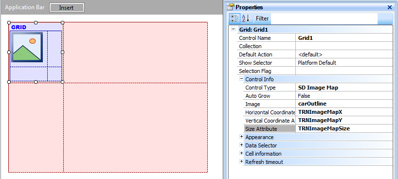
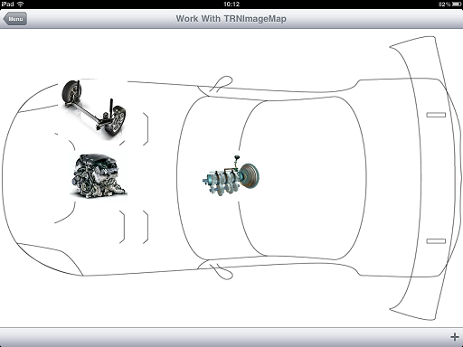
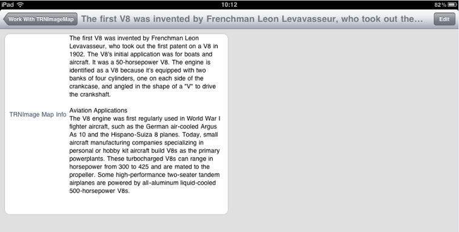

HowTo: Use the SD Image Map Control for Smart Devices
The SD Image Map control lets you display a background image with regions identified by its coordinates {x, y} and a size. Each defined region can have an image to display on the coordinates defined for it with the indicated size. Each region corresponds to one item of the list (grid). When a region is selected, the default action associated with it will be run. This article explains the most important concepts related to the SD Image Map control and includes an example of how to use it. This control applies to the Grid control. For example, we are interested in representing the parts of a car:  Let's start by defining the following transaction with the WWSD pattern applied.  Before we continue with this example, we need to set some basics we may need to understand how this control works. As we already mentioned, this control lets you display a background image with regions identified by its coordinates. The coordinates start ({o,o} coordinate) in the upper left corner of the background image; the X-axis is horizontal to the background image and extends to the right; the Y-axis is vertical to the background image and extends downward. So, when we create a new transaction we need to define at least the following four attributes, as shown in the transaction image:
Note: the attribute TRNImageMapInfo is not necessary; it will be used in this example to show information about the region when it's selected. Once we have applied the WWSD pattern, we need to enable the Image Map control on our grid. To do so, we open the List section, select the grid and set the Control Type property to SD Image Map.  This will enable some other properties, as seen in the previous image: SD Image Map properties:
SD Image Map methods (**): Grid1.SetBackGroundImage(Image) Continuing with our example let's set the properties as follows:
* This image must be in our KB. Then we insert, in the Grid's table, the image attribute that will be displayed as the background for each region. The result must be as shown below:  Now we are done, so press F5.  Select one of the regions by tapping on the image that represents it, and see what happens.  As you may have noticed, when you select a region the default action will be run. In this case, the General section is shown. In the example, we created three new car parts (records in a transaction) and in the general section, we deleted all the attributes from the layout except for TRNImageMapInfo, because that's the only attribute we want to have displayed. Final notesThe coordinates are relative to the size of the background image. For example, if we have an image of 800x600 and coordinates {500, 200} for a region, and a resolution of 1024x768, the image of that region will be shown at {500*1024/800, 200*768/600} = {640, 256}. Images bigger than the device's resolution won't be displayed. For example, if we have a device with a resolution of 1024x768 and an image of 2048x1536, it won't be displayed. In GeneXus X Evolution 3, to make it easier to position the items inside the image, when executing in the iPhone Simulator, if you tap anywhere on the image the coordinates of the tapped point are logged to the Xcode console. AvailabilityThis control is available for Android and iOS as of GeneXus X Evolution 2. RestrictionsIn Android, the zoom feature only works on devices with Android version 2.2 and later. Videos
|